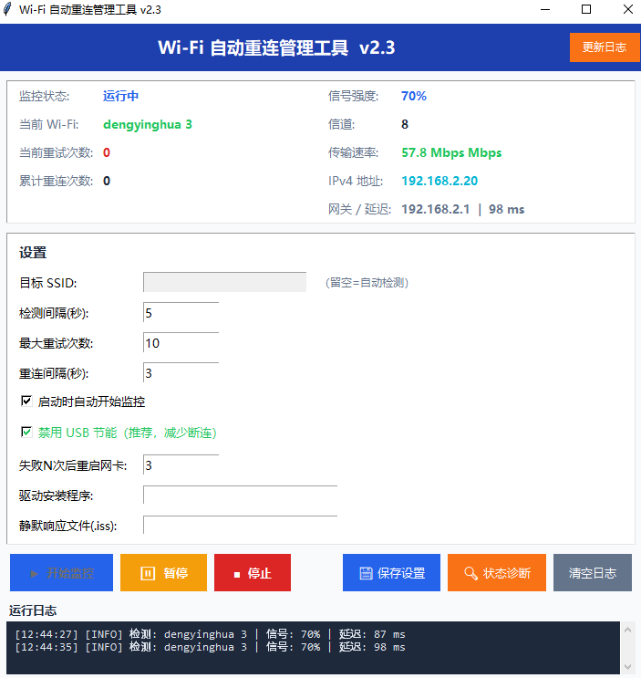

从智能重连到实时监控，全方位保障你的网络连接
每隔 5 秒自动检测 Wi-Fi 连接状态，无需人工干预，全天候守护网络在线
自动扫描可用网络并匹配已保存配置，只连接有密码的已知 Wi-Fi，避免连接陌生网络
标准重连 → 网卡重启 → 驱动重装，三级容灾逐步升级，确保重连成功率
检测到 WLAN 开关被关闭时，自动尝试 netsh autoconfig + 重启网卡恢复连接
启动时自动禁用 USB 选择性挂起，防止 Windows 省电机制导致 USB 网卡断连
实时显示 SSID、信号强度、信道、传输速率、IP 地址、网关、延迟等完整网络信息
所有操作日志实时输出，深色背景高亮显示，支持一键清空，方便排查问题
每次重连前检查 WLAN AutoConfig 服务状态，服务挂掉自动拉起，确保系统网络服务正常
每次检测 ping baidu.com，实时显示网络延迟毫秒数，直观了解网络质量
基于 tkinter 构建，无需安装额外依赖，开箱即用的中文管理界面

SSID、信号强度、信道、速率、IP、网关、延迟
目标网络、检测间隔、重试次数、驱动路径等
彩色日志实时输出，成功/失败/警告一目了然
无论你是个人用户还是无人值守设备，都能派上用场
水星 MW150US 等 USB 网卡经常莫名断连，自动重连省心省力
Windows 省电机制导致 USB 网卡被挂起，工具自动禁用节能策略
Wi-Fi 信号弱或不稳定需要频繁重连，工具全程自动处理
下载机、监控机等无人值守设备需要保持网络长期在线
WLAN 无线电开关被误关闭后自动检测并恢复连接
经过多轮实战打磨，解决真实环境中的各种网络问题
绕过 Python subprocess 直接调用 netsh 返回空输出的环境问题，通过 netsh ... | Out-String 管道确保输出捕获
以网卡 Status 字段（Up / Disconnected / Disabled）作为连接状态唯一权威判断，彻底解决误判
自动探测 UTF-8 / GBK / GB2312 / CP936 编码，完美兼容中英文 Windows 系统环境
PowerShell → cmd → 直接调用 netsh，确保重连命令在不同系统环境下都能成功执行
扫描可用网络 + 匹配已保存配置文件，只连接有密码的已知网络，避免连接陌生开放网络
支持驱动程序 /s 参数静默重装，结合 .iss 响应文件实现全自动驱动恢复
持续迭代，不断优化，快速响应真实用户反馈
完全免费，无需注册，下载即用
版本 v2.3 · 约 21KB · 适用于 Windows 10/11 Pro
| 文件名 | 说明 |
|---|---|
wifi_monitor.py |
主程序（约 21KB） |
启动_WiFi监控.bat |
Windows 启动脚本（纯英文，避免编码问题） |
启动_WiFi监控_诊断版.bat |
诊断启动脚本（分步检查环境） |
后台静默启动.vbs |
后台静默启动（无窗口） |
一键更新.bat |
自动更新脚本（解压覆盖旧文件） |
关于使用和配置的常见疑问解答